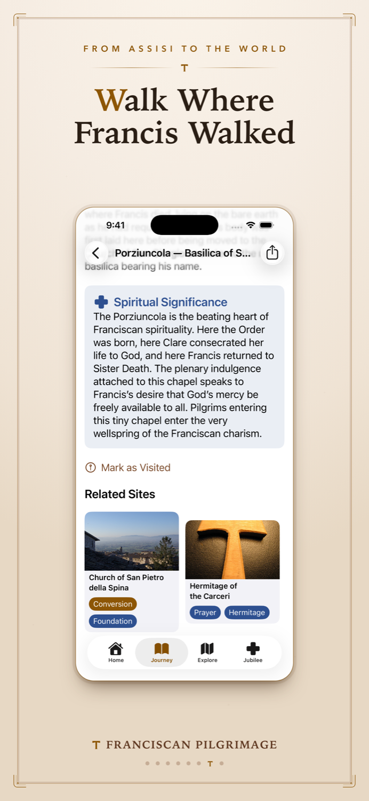

About the app
Short (one line)
Long (one paragraph)
Franciscan Pilgrimage is a free, offline-first app for iPhone and iPad that guides pilgrims through the life and legacy of St. Francis of Assisi. It pairs a 24-chapter chronological journey through Francis's life with an interactive map of 37 sacred Franciscan sites worldwide — from the Porziuncola and San Damiano to La Verna, Greccio, Fonte Colombo, the Basilica of San Francesco, and the Holy Land sites of the Franciscan Custody. For the special Jubilee Year of Saint Francis (2026–2027), a nearby-church finder helps Catholics locate designated Franciscan churches where the plenary indulgence may be received under the usual conditions. Every chapter and site description is theologically vetted and fact-checked against primary sources (Thomas of Celano, Bonaventure's Legenda Maior, the Fioretti) and modern scholarship (Vauchez, Thompson) — and where tradition and history part ways, the app says so. There are no ads, no tracking, and no subscription. Built by If Then Dev LLC, an independent Catholic developer, it is offered freely in the spirit of Franciscan simplicity, with an optional tip jar for those who wish to support the work.
About the studio
If Then Dev LLC is the independent iOS studio of Mike Milinazzo, building native Apple-platform apps since 2012. The catalog spans education, faith, sports, indie-developer tools, and Vision Pro. Franciscan Pilgrimage was inspired by his own pilgrimage to Assisi, his ties to Franciscan organizations, and his desire to help spread peace and good in the world. More at ifthendev.com.
Elevator pitch
The special Jubilee Year of Saint Francis marks 800 years since the death of St. Francis of Assisi, and the Jubilee designates Franciscan churches worldwide for the plenary indulgence. Franciscan Pilgrimage was built for this moment: it tells Francis's story in 24 prayerful chapters, maps 37 of the holiest places he walked, and helps any pilgrim — in Umbria or at home — find a designated Jubilee church nearby, where the indulgence may be received under the usual conditions. Free, fully offline, reverently made, and honest about its history.
Fact sheet
| App name | Franciscan Pilgrimage |
|---|---|
| Subtitle | Jubilee Year Pilgrimage Guide |
| Developer | If Then Dev LLC (Mike Milinazzo) |
| Platform | iOS 26 or later — iPhone and iPad |
| Price | Free. No ads, no tracking, no subscription. Optional tip jar. |
| Languages | English, Italian, Spanish, Portuguese, French |
| Category | Reference (primary), Travel (secondary) |
| Released | May 26, 2026 — during the special Jubilee Year of Saint Francis (closes January 10, 2027) |
| App Store | apps.apple.com/app/id6760918231 (App Store ID 6760918231) |
| Bundle ID | com.ifthendev.franciscanpilgrimage |
| Press / support | help@ifthendev.com |
| Website | ifthendev.com/franciscanpilgrimage |
| Privacy policy | privacypolicy.html |
Key features
- A 24-chapter journey through Francis's life — from his birth in Assisi to his Transitus at the Porziuncola, each chapter pairs a short narrative with a Scripture reading and a reflection written for prayer, not lecture.
- 37 sacred sites, mapped and filterable — the Porziuncola, San Damiano, La Verna, Greccio, Fonte Colombo, the Basilica of San Francesco, and the Holy Land sites of the Franciscan Custody. Filter by what happened there, what kind of place it is, and which Franciscan charism it embodies.
- Jubilee church finder — locate designated Franciscan churches near you during the 2026–2027 Jubilee Year, with addresses and directions. At a designated church the plenary indulgence may be received under the usual conditions — sacramental confession, Eucharistic communion, prayer for the Holy Father's intentions, and detachment from all sin.
- Franciscan prayers — the Canticle of Brother Sun, the Prayer of St. Francis, the Franciscan Crown Rosary, and site-specific devotions.
- Saint of the Day and a daily prayer — a quiet daily touchpoint on the Home screen.
- Home and Lock Screen widgets — keep the day's saint and prayer at hand.
- Fully offline — every chapter, site, and prayer works without a connection after first launch. Built for back roads to La Verna and the Holy Land alike.
- Five languages from day one — English, Italian, Spanish, Portuguese, French.
- Free, with dignity — no ads, no tracking, no paywall. An optional tip jar ("A Prayer / A Candle / A Meal / A Pilgrimage") supports continued development.
Why now
2026 marks the 800th anniversary of the death of St. Francis of Assisi, who died on the evening of October 3, 1226 — the Transitus, his "passage to Sister Death." Pope Leo XIV proclaimed a special Jubilee Year of Saint Francis running January 10, 2026 to January 10, 2027. A decree of the Apostolic Penitentiary dated January 10, 2026 designates every Franciscan church worldwide for the Jubilee plenary indulgence — an unusually broad provision that puts the indulgence within reach of pilgrims everywhere, not only those who travel to Assisi.
For reporters and editors, the calendar offers natural pegs through the second half of 2026:
The Jubilee closes January 10, 2027 — a hard deadline that gives the indulgence story built-in urgency.
The developer story
Franciscan Pilgrimage is the work of If Then Dev LLC, the studio of independent developer Mike Milinazzo, built by hand for iPhone and iPad. It grew out of a conviction that the 800th anniversary of Francis's death deserved a tool worthy of the occasion — one that could put the story of il Poverello and the holy places of his life into a pilgrim's pocket, online or off, in the languages Catholics actually pray in.
What sets the project apart is its commitment to content integrity. Drafts were written through a Franciscan theological lens and then audited against the primary sources — Thomas of Celano, Bonaventure's Legenda Maior, the Fioretti — and weighed against the best modern scholarship, including the biographies of André Vauchez and Augustine Thompson. Where pious legend and the historical record diverge, the app names the difference rather than smoothing it over. The aim was straightforward: a pilgrimage app a Franciscan tertiary, a parish priest, and a seminary professor could all recommend.
Pull-quotes
These are statements the developer is available to make and may be quoted or paraphrased. They are first-party statements, not third-party endorsements.
Screenshots




High-resolution originals (iPhone 1290 × 2796, iPad 2048 × 2732) and additional assets are available on request — contact us.
App icon & brand
A Tau — the mark Francis used to sign his letters and bless his brothers — rising over the pilgrim road to Assisi, beneath a dove and the rising sun, marked with the 800 of the anniversary. One glyph, two meanings: "Franciscan" and "pilgrimage." Adapts to iOS 26 light, dark, and tinted appearance modes.
Press contact
If Then Dev LLC
Mike Milinazzo, Developer
Press & support: help@ifthendev.com
Website: ifthendev.com/franciscanpilgrimage
Interviews, additional assets, and review access (TestFlight) available on request.